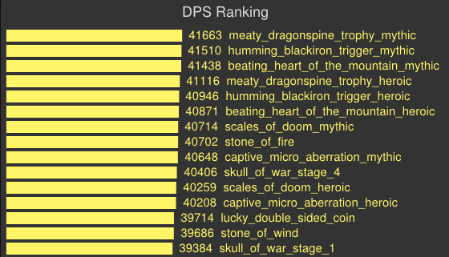

Combat Rogue
About the author
This guide is written by Ninjablaze, a Rogue expert who is well versed in logs, simulations and theorycraft. He is the current GM of Toxic and previously led Victory or Whatever to all of their highest finishes. He maintains the Combat rogue guide. Ninjablaze has been playing Rogue as his main since he first picked up World of Warcraft in 2006.
Spec Overview
The rogue class is not a one spec class. The most successful rogues will make use of all the tools they have available to them and not lock in to a singular spec for every encounter. Combat is a very important piece of that puzzle.
Combat is the premier rogue cleave and AoE spec. While it’s single target leaves much to be desired it’s multitarget can hang with any spec in the game. It’s rotation is fairly simple and its cooldowns are strong, frequent and have good synergy with each other thanks to Ruthlessness.
Like all rogue specs on top of damage we boast the greatest surivivability toolkit in all of WoW. Feint provides and on demand 50% reduction to AoE damage (most of the damage you take in a raid) and Cloak of Shadows provides a magic immunity every minute. On top of that we have great mobility between 2 sprints and our choice of either Shadowstep or Burst of Speed. This toolkit makes the rogue the perfect choice for handling many mechanics that require soaking big damage or high mobility.
Links
Changelog
• 5/3: A guide is born
Rotation
1) Keep Slice and Dice up at all times.
2) Keep Revealing Strike up any time you are going to use Sinister Strike or Eviscerate
3) Use your cool downs on cool down. Cool downs can be delayed as long as they do not result in the loss of an additional use however this is unlikely because using Eviscerate
reduces the remaining cooldown of both Adrenaline Rush and Killing Spree via Ruthlessness.
4) Use Vanish and Ambush on cooldown.
5) If you are fighting more than one target activate Blade Flurry and continue your rotation as normal. In certain situations you will want to swap to a fast main hand. When you want to do this depends on how many targets you are facing and how long they will be alive for. Best estimates show that if there are only 2 targets up they will need to live for at least 35 seconds in order for swapping to be an increase. Each additional target following will required to be for 5 less seconds in order to remain an increase.
Opener without 4p and no targets to reset Marked for Death on:
1) Marked for Death when the timer goes up.
2) Slice and Dice one second before pull.
3) Ambush
4) Revealing Strike to spend some more energy
6) Sinister Strike if below 5 CP to spend energy
8) Sinister Strike to 5 CP
9) Eviscerate
*If you will have opportunities to reset marked for death on adds you will not use it until the adds spawn.
Opener with 4P (Anticipation):
1) Ambush
4) Sinister Strike up to Shallow Insight
7) Use Eviscerate at 5 CP + 3 Anticipation while building up to Deep Insight. At Deep Insight use 5 CP Eviscerate.
Talents Cheat Sheet
Level 15: Shadow Focus at all times.
Level 30: Nerve Strike is the only talent that has any use for raiding in this tier and even its use is extremely situational.
Level 45: Cheat Death is your go to talent most of the time. The only time you would swap to Elusiveness is if there is some form of big damage you need to soak that you otherwise be unable to soak.
Level 60: Shadowstep is the go to choice on this talent tier. Consider Burst of Speed if the fight requires heavy movement that 2 sprints and a Shadowstep wont cover.
Level 75: Another unimportant tier for raiding. Prey on the Weak has extremely situational use once again due to the high opportunity cost of rogue stuns.
Level 90: Marked for Death or Anticipation
Level 100: Venom Rush
Advanced Talents
Level 15: Nightstalker, Subterfuge, Shadow Focus
Nightstalker
This talent increases your movement speed while in stealth and grants you a 50% bonus to the attack you use to break stealth. It is a solid choice for leveling but is not useful in a raid environment.
This Talent Allows the use of stealth abilities for 3 seconds after stealth breaks. It is not recommended for combat rogues in PvE.
Shadow Focus
This talent decreases the energy cost of the ability you use to break stealth by 75%. It is your go to end game PvE talent for this tier.
Level 30: Deadly Throw, Nerve Strike, Combat Readiness
Deadly Throw
This talent is a ranged finisher that does a small amount of damage as well as applying a 50% slow to the target. If used with 5 CP it will also interrupt the targets cast. This talent is not particularly useful in a raid environment.
Nerve Strike
This talent causes your target to deal 50% reduced damage after it has been stunned by Cheap shot or Kidney Shot. It has situational use in raiding if there is an add that can be stunned and deals high raid damage. Ra-Den is a prime example.
Combat Readiness
This talent causes successive weapon attacks to deal 10% less damage stacking up to 5 times when activated. It is typically not useful in a raid environment because if you are being melee’d by the boss you are most likely going to die sooner rather than later.
Level 45: Cheat Death, Leeching Poison, Elusiveness
Cheat Death
This talent causes a fatal attack to instead bring you to 7% of your total HP and cause you to take 85% reduced damage for the 3 seconds that follow. This is your go to raiding talent.
Leeching Poison
This talent gives you a non-lethal poison which causes 10% leach. A solid choice for leveling however in end game content the leach becomes mostly over heals. It typically does not heal you up rapidly enough to save you from lethal mechanics.
Elusiveness
This talent causes your feint to reduce the damage you take by an additional 30% from all sources. It is your go to PvP talent and has situational use in PvE. The reason this talent is not more useful in PvE is because it stacks multiplicatively with the 50% area of effect reduction from feint. Since most of the damage you take in a raid is AoE this only adds an additional 15% reduction on top of the 50% you already have. If you need to soak something you can’t soak without Elusiveness take this talent otherwise Cheat Death is the better choice.
Level 60: Cloak and Dagger, Shadowstep, Burst of Speed
Cloak and Dagger
This talent causes your stealth abilities to teleport you behind the target. It is not a strong choice in any content.
Shadowstep
This talent causes you to teleport behind your enemy and increases your movement speed by 70% for 2 seconds following. It has a 20 second cooldown and is your go to PvE talent choice.
Burst of Speed
This talent increases your movement speed by 70% for 4 seconds and removes movement impairing effects. It costs 30 energy and has a 3 second cooldown. It is the go to choice for PvP.
Level 75: Prey on the Weak, Internal Bleeding, Dirty Tricks
Prey on the Weak
This talent makes enemies you stun take 10% extra damage from all sources. It can be used if there is a stunnable priority target that needs to be burned down quickly. Rogues are usually the last choice for a stun due to the high opportunity cost of Combo Points however it can be useful if there is no other stun available.
Internal Bleeding
This talent adds a bleed to your Kidney shot. It is your go to PvP talent.
Dirty Tricks
This talent causes Gouge and Blind to longer cost energy and not break from your bleed effects. It is not used in PvE or PvP.
Level 90: Shuriken Toss, Marked for Death, Anticipation
Shuriken Toss
This talent replaces throw with a ranged combo point builder. Unfortunately it does not do a whole lot of damage and is not used in PvE or PvP.
Marked for Death
This talent instantly grants you 5 combo points and has a one minute cool down. If the target dies the cooldown is reset. Marked for Death is your go to talent across the board before you have the 4 piece tier bonus. Once you have the 4 piece tier bonus it is still chosen on fights where you can get a reset every 3 minutes. Additionally Marked for Death is the go to choice for PvP.
Anticipation
This talent allows you to pool up 5 extra combo points. It is the go to choice after you have acquired 4 piece for fights in which marked for death cannot reliably be reset.
Level 100: Venom Rush, Shadow Reflection, Death from Above
Venom Rush
This talent increases your maximum energy by 15 and increases your energy generation for targets effected by your poison by 5% per target stacking up to 3 targets. It does work with Instant Poison and is your best option for PvE.
Shadow Reflection
This talent creates a temporary clone of yourself which watches you for 8 seconds. After 8 seconds it mimics all of your special attacks. It has a 2 minute cool down and does not reliably line up with any cooldowns for combat rogues making it a sub par choice in PvE.
Death from Above
This talent is a finishing move on a cooldown. It is a 2 part attack. The first part is a weak AoE pulse. The second part causes you to leap into the air and come down performing a buffed Eviscerate. This is a weak choice for combat rogues as the net damage gain is too small to make worthwhile.
Glyphs
Major
Glyph of Disappearance
Allows more frequent use of vanish for more ambushes at the cost of not returning you to stealth at the end of vanish. This is a minor DPS increase with no real downside in a raid environment.
Glyph of Energy
Increases your maximum energy by 20. This will help prevent you from energy capping during high energy times.
Minor
Glyph of Killing Spree
Returns you to your original location at the end of Killing Spree. Keep in mind sometimes the place you start your KS will be more dangerous than the place you finish your KS and thus this glyph should be use situationaly.
Situational
Glyph of Feint
Increases the duration of your feint by 2 seconds. Useful on fights you use feint a lot.
Glyph of Smoke Bomb
Increases the duration of your smoke bomb by 2 seconds. Useful on fights that are raid cooldown intensive.
Glyph of Sprint
Increases the movement speed of sprint by 30%. Useful for most encounters and should be used when neither of the above glyphs are needed.
Stats
Haste > Multistrike > Versatility > Critical Strike > Mastery
When cleaving at a certain number of targets multistrike surpasses haste as your best stat. What that number of targets is depends entirely on your gear. While it typically occurs around 3 targets your best bet is to consult shadowcraft.mmo-mumble.com.
Agility is a primary stat that provides 1 Attack Power (AP) per point. A many of our abilities use a percentage of attack power to the damage they deal.
Mastery: Main Gauche Gives your main-hand attacks a chance to trigger an off-hand attack for 140% weapon damage.
Critical Strike increases the chance to critically hit with abilities.
Haste increases attack speed and energy regeneration rate.
Versatility increases all damage and healing done, and decreases all damage taken.
Multistrike causes abilities to have a chance to hit a second and a third time, each dealing 30% of the initial damage.
Enchants
Rings: Enchant Ring – Gift of Haste
Cloak: Enchant Cloak – Gift of Haste
Neck: Enchant Neck – Gift of Haste
Weapon: Mark of the Warsong
Gems: Greater Haste Taladite
Consumables
Food: Buttered Sturgeon
Potion: Draenic Agility Potion
Flask: Greater Draenic Agility Flask
Gear
| Slot | Item | Source |
|---|---|---|
| Helmet | Sorka’s Nightshade Cowl | Iron Maidens |
| Necklace | Darklight Necklace | Gruul |
| Shoulder | Poisoner’s Spaulders | Thogar |
| Cloak | Drape of the Dark Hunt Terror | Iron Maidens |
| Chest | Poisoner’s Tunic | Flamebender |
| Bracer | Bracers of Shattered Stalactites | Kromog |
| Gloves | Poisoner’s Gloves | Iron Maidens |
| Waist | Girdle of Unconquered Glory | Hans and Franz |
| Legs | Poisoner’s Leggaurds | Blast Furnace |
| Boots | Iron-Flecked Sandals | Trash |
| Ring | Unexploded Explosive Shard | Oregorger |
| Weapon | Hans’gar’s Forgehammer | Hans and Franz |
| Weapon | Hans’gar’s Forgehammer | Hans and Franz |
| Trinket | Meaty Dragonspine Trophy | Gruul |
| Trinket | Humming Blackiron Trigger | Blackhand |
Blackrock Foundry

Oregorger
Talents
Shadowstep, No 4p:Marked for Death, With 4p: Anticipation
Strategy
Be mindful of the timer on explosive shards when you killing spree. You can cloak the explosion from the shards. During the roll phase if you find yourself in a bind pop evasion and face the boss to avoid all damage. Fire lines (mythic only) can be cloaked as well.

Hans’gar & Franzok
Talents
Shadowstep, No 4p:Marked for Death, With 4p: Anticipation
Strategy
Combat DPS is largely effected by stratagy on this fight. If you use a strategy in which the bosses are frequently stacked and you can cleave combat will shine. Be careful with killing spree during stamper phases.

Beastlord Darmac
Talents
Shadowstep, Marked for Death
Strategy
Use Marked for Death on every set of Pack Beasts that spawns at least once. There is a macro that can be found on the macros page that allows you to mark adds while remaining on the boss as your main target. Spears should also be marked just before they die. On mythic you can also mark the beasts when the boss jumps off them before they die as well.

Gruul
Talents
Shadowstep, No 4p:Marked for Death, With 4p: Anticipation
Strategy
Be mindful of the inferno slice timer when you use Killing Spree. If you pre-cloak Petrifying slam you will not get petrify. Inferno slice can be cloaked and feinted. Flare (mythic) can be cloaked off as well.

Flamebender Ka’graz
Talents
Shadowstep, No 4p:Marked for Death, With 4p: Anticipation
Strategy
Use cool downs more or less how as they come. Even if they are not up at the start of the Wolves phase they should come back up at some point during it especially if you have 4p. You can delay the use of cool downs so long as doing so does not cost you an additional use. In other words if you are going to delay them do not delay them for long. Cloak of Shadows will remove stacks of Singe.

Operator Thogar
Talents
Shadowstep, Marked for Death
Strategy
Use Marked for Death on every set of adds. Use the macro on the macros page to mark adds while still targeting your primary target. Priority target is the Man at Arms so cleave off of him. Deforester (mythic) can be cloaked. If a smoke bomb is placed on a lock portal and the portal is taken over a deforester it will not apply a stack.

Blast Furnace
Talents
Shadowstep, Marked for Death
Strategy
Use Marked for Death intelligently. Cleave off of priority targets. Bombs can be cloaked. If a bomb bag drops on top of a door you can use cloak and spam all bombs. Cleave hard in the first 2 phases and turn : Blade Flurry
off in P3.

Kromog
Talents
Shadowstep, No 4p:Marked for Death, With 4p: Anticipation
Strategy
Break hands as quickly as possible and then use Killing Spree with blade flurry active. If you miss getting grasped by a hand you can Feint
and shadow step back to them to avoid the fall damage.

Iron Maidens
Talents
Shadowstep, No 4p:Marked for Death, With 4p: Anticipation
Strategy
Cleave whenever possible. During the bomb phases it is safest to use : Killing Spree
after bombs have detonated and before the new set arrives. Blood ritual and penetrating shot can be feinted. Cloak of Shadows
can absorb damage from Rapid Fire.

Blackhand
Talents
Shadowstep, No 4p:Marked for Death, With 4p: Anticipation
Strategy
Use single target rotation. In p1 chain Feint
for the duration of Demolition. Bombs can be safely detonated with Cloak of Shadows. In p2 Cloak of Shadows can be used to remove the dot caused from soaking the fire falling from the ceiling(mythic). In p3 use Feint on every massive smash and then Shadowstep, to a ranged or healer. Use Cloak of Shadows
AddOns
WeakAuras
With this AddOn, you can do anything. Literally anything, provided you have some lua knowledge. If you don’t, well that’s not a problem! The options are pretty simple to follow and you can make notifiers for any buff/debuff imaginable. You can also customize it to warn you in different ways, such as through sounds, animations, text, etc.
Macros
Encounter Specific Marked for Death Off-Target
#showtooltip Marked for Death
/tar (mob name)
/cast Marked for Death
/targetlasttarget
BF+Weapon Swap
*This macro requires you to have one set saved in the equipment manager with Slow weapons (mine is called combat) and another saved with a fast weapon (mine is called cdags). Change the set names in my macro to your set names for the macro to work.
#showtooltip Blade Flurry
/equipset [equipped: dagger] combat; cdags
/cast [noequipped: dagger] Blade Flurry
/cancelaura [equipped: dagger] Blade Flurry
Simulations
Trinket Rankings
